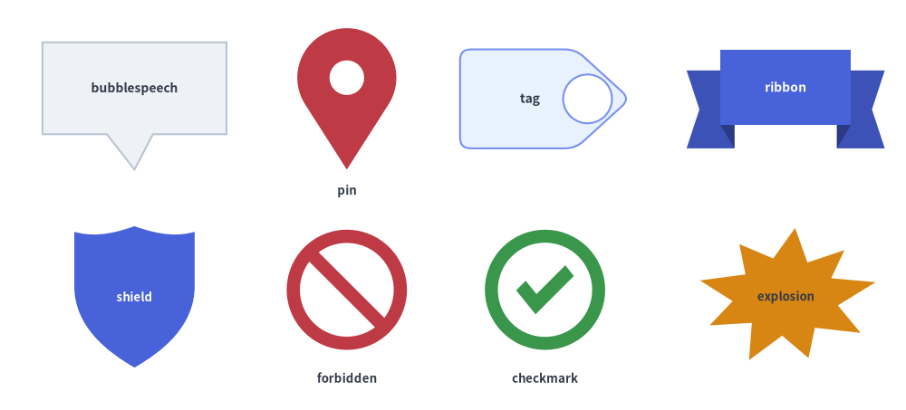
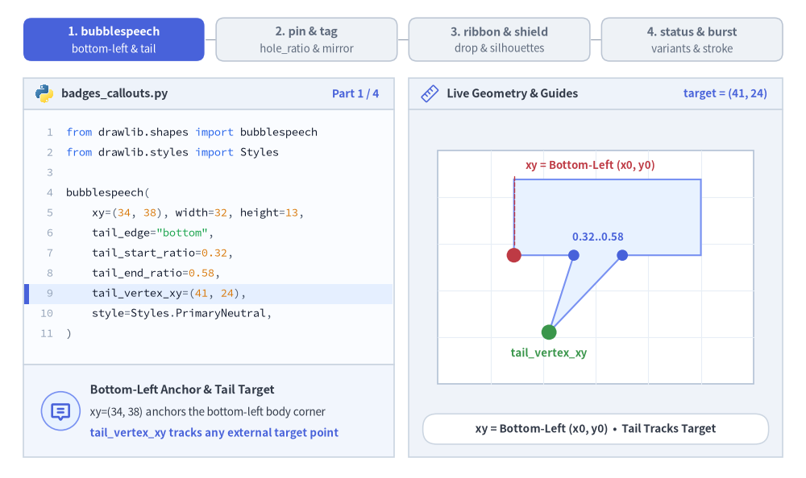
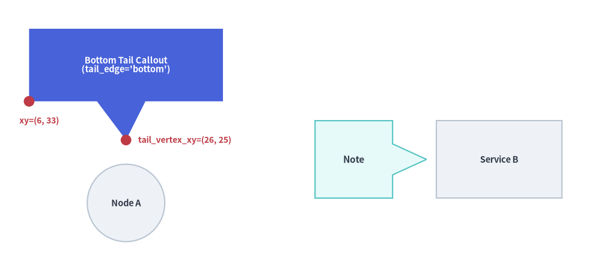
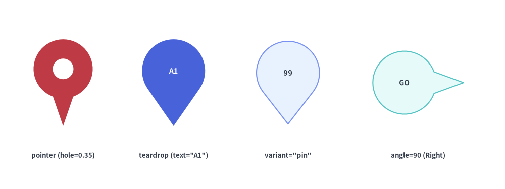
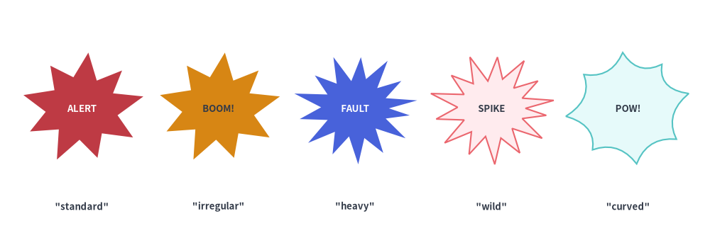

吹き出し・バッジ・ステータス
drawlib.shapes の 吹き出し・バッジ・ステータス カテゴリは、8 種類の注釈・セキュリティ・検証向けプリミティブ を提供します。方向付き吹き出しコールアウト（bubblespeech）、ロケーション／ポインタピン（pin）、リリース・分類タグ（tag）、3D 段付きマイルストーンリボン（ribbon）、セキュリティ／ガバナンスシールド（shield）、アクセス禁止バッジ（forbidden）、検証チェックマーク（checkmark）、およびコミック／インシデントバースト（explosion）を利用できます。

Source Code
from drawlib.canvas import save, setup
from drawlib.shapes import (
bubblespeech,
checkmark,
explosion,
forbidden,
pin,
ribbon,
shield,
tag,
)
from drawlib.styles import Styles
from drawlib.text import text
setup(width=128, height=58)
lbl_dark = Styles.DarkBold.patch(text_size=10.0)
lbl_white = Styles.WhiteBold.patch(text_size=10.0)
cap_st = Styles.DarkBold.patch(text_size=9.5)
# Row 1: bubblespeech, pin, tag, ribbon
bubblespeech(
xy=(6, 39),
width=26,
height=13,
tail_edge="bottom",
tail_start_ratio=0.35,
tail_end_ratio=0.60,
tail_vertex_xy=(19, 34),
style=Styles.Neutral,
text="bubblespeech",
text_style=lbl_dark,
)
pin(
(49, 44),
width=14,
height=20,
variant="teardrop",
hole_ratio=0.35,
style=Styles.DangerFlat,
)
text((49, 31), "pin", style=cap_st)
tag(
(77, 44),
width=24,
height=14,
variant="angled",
style=Styles.PrimaryNeutral.patch(shape_r=1.5),
text="tag",
text_style=lbl_dark,
)
ribbon(
(111, 44),
width=28,
height=14,
variant="down",
style=Styles.PrimaryFlat,
text="ribbon",
text_style=lbl_white,
)
# Row 2: shield, forbidden, checkmark, explosion
shield(
(19, 16),
width=17,
height=20,
variant="classic",
style=Styles.PrimaryFlat,
text="shield",
text_style=Styles.WhiteBold.patch(text_size=9.5),
)
forbidden((49, 17), radius=8.5, variant="slash", style=Styles.DangerFlat)
text((49, 4.5), "forbidden", style=cap_st)
checkmark((77, 17), width=17, variant="circle", style=Styles.SuccessFlat)
text((77, 4.5), "checkmark", style=cap_st)
explosion(
(111, 16),
width=26,
height=20,
variant="irregular",
style=Styles.WarningFlat,
text="explosion",
text_style=Styles.DarkBold.patch(text_size=9.5),
)
save()
1. 基本の幾何構造とコンセプト
pin, tag, ribbon, shield, forbidden, checkmark, explosion が Drawlib 標準の中心アンカー規約（xy）に従う一方、bubblespeech はポインタテールが任意のターゲット座標（tail_vertex_xy）を正確に追従できるよう、矩形ボディの左下角 (x0, y0) をアンカーとします。辺上の接続比率（tail_start_ratio〜tail_end_ratio）、ヘッドやカラーの穴あき（hole_ratio）と水平反転（mirror）、3D リボンの段差オフセット（drop_ratio）、複合パスのステータス記号やバースト形状（variant・thickness_ratio）によって各プリミティブがどのように変化するかを確認してみましょう。

Source Code
from __future__ import annotations
from drawlib import shapes as sh
from drawlib.anim import Animation
from drawlib.canvas import save, setup
from drawlib.icons import code as code_icons
from drawlib.icons import phosphor
from drawlib.lines import line
from drawlib.shapes import (
bubblespeech,
circle,
explosion,
pin,
rectangle,
ribbon,
shield,
tag,
)
from drawlib.smartarts import SourceCode, SourceCodeStyles
from drawlib.styles import Styles
from drawlib.text import text
W, H = 138.0, 82.0
setup(width=W, height=H)
anim = Animation(fps=10.0, loop=0)
CODE_TEXT_SIZE = 10.0
PT_TO_CANVAS = W / 720.0
FONT_CANVAS = CODE_TEXT_SIZE * PT_TO_CANVAS
LINE_H = FONT_CANVAS * 1.8
PAD_Y = FONT_CANVAS * 1.2
CODE_STYLES = SourceCodeStyles.get("default", font_lang="en", text_size=CODE_TEXT_SIZE).patch(
box_style=Styles.Neutral.patch(shape_fill_color=(0, 0, 0, 0), shape_line_width=0),
)
PANE_HEADER = Styles.Neutral.patch(
shape_fill_color=(238, 243, 250),
shape_line_color=(203, 213, 225),
shape_line_width=1.2,
shape_r=0.0,
)
EDITOR_BODY = Styles.Neutral.patch(
shape_fill_color=(250, 252, 255),
shape_line_color=(203, 213, 225),
shape_line_width=1.2,
shape_r=0.0,
)
TAKEAWAY_BODY = Styles.Neutral.patch(
shape_fill_color=(242, 246, 253),
shape_line_color=(203, 213, 225),
shape_line_width=1.2,
shape_r=0.0,
)
STUDIO_BODY = Styles.Neutral.patch(
shape_fill_color=(239, 243, 249),
shape_line_color=(203, 213, 225),
shape_line_width=1.2,
shape_r=0.0,
)
PART_ITEMS = [
("1. bubblespeech", "bottom-left & tail"),
("2. pin & tag", "hole_ratio & mirror"),
("3. ribbon & shield", "drop & silhouettes"),
("4. status & burst", "variants & stroke"),
]
def draw_step_bar(active_part: int) -> None:
"""Draw top 4-part progress bar (active_part is 1..4)."""
pill_w = 31.0
pill_h = 7.4
gap = 2.0
start_x = 4.0 + pill_w / 2.0
cy = 75.2
for idx, (label, sublabel) in enumerate(PART_ITEMS, start=1):
cx = start_x + (idx - 1) * (pill_w + gap)
if idx > 1:
prev_cx = cx - (pill_w + gap)
line(
(prev_cx + pill_w / 2.0 + 0.2, cy),
(cx - pill_w / 2.0 - 0.2, cy),
style=Styles.PrimaryBold if idx <= active_part else Styles.MutedThin,
)
if idx == active_part:
st = Styles.PrimaryFlat.patch(shape_r=1.4)
tst = Styles.WhiteBold.patch(text_size=10.3)
sub_tst = Styles.White.patch(text_size=9.5)
elif idx < active_part:
st = Styles.PrimaryNeutral.patch(shape_r=1.4, shape_line_width=1.1)
tst = Styles.PrimaryBold.patch(text_size=10.3)
sub_tst = Styles.Primary.patch(text_size=9.5)
else:
st = Styles.Neutral.patch(shape_r=1.4, shape_line_width=1.1)
tst = Styles.MutedBold.patch(text_size=10.3)
sub_tst = Styles.Muted.patch(text_size=9.5)
rectangle((cx, cy), width=pill_w, height=pill_h, style=st)
text((cx, cy + 1.35), label, style=tst)
text((cx, cy - 1.55), sublabel, style=sub_tst)
def draw_left_pane(
active_part: int,
code_lines: list[str],
hl_range: tuple[int, int],
icon_fn: object,
summary_title: str,
summary_line1: str,
summary_line2: str,
) -> None:
"""Draw left Python code editor + bottom geometric concept note."""
x0, w = 4.0, 63.5
cx = x0 + w / 2.0
top_y = 63.2
header_h = 5.4
editor_h = 43.8
takeaway_h = 15.8
rectangle((cx, top_y + header_h / 2.0), width=w, height=header_h, style=PANE_HEADER)
code_icons.python((x0 + 3.6, top_y + header_h / 2.0), width=3.4, style=Styles.Neutral)
text(
(x0 + 6.5, top_y + header_h / 2.0),
"badges_callouts.py",
style=Styles.DarkBold.patch(text_size=10.2, halign="left"),
)
text(
(x0 + w - 2.6, top_y + header_h / 2.0),
f"Part {active_part} / 4",
style=Styles.PrimaryBold.patch(text_size=9.8, halign="right"),
)
rectangle((cx, top_y - editor_h / 2.0), width=w, height=editor_h, style=EDITOR_BODY)
hl_start, hl_end = hl_range
hl_top = top_y - PAD_Y - hl_start * LINE_H
hl_bot = top_y - PAD_Y - (hl_end + 1) * LINE_H
hl_cy = (hl_top + hl_bot) / 2.0
hl_h = hl_top - hl_bot
rectangle(
(cx, hl_cy),
width=w - 0.6,
height=hl_h,
style=Styles.Neutral.patch(shape_fill_color=(229, 239, 255), shape_line_width=0),
)
rectangle(
(x0 + 0.55, hl_cy),
width=0.9,
height=hl_h,
style=Styles.PrimaryFlat.patch(shape_line_width=0),
)
SourceCode.draw(
xy=(x0, top_y),
width=w,
code="\n".join(code_lines),
styles=CODE_STYLES,
code_lang="python",
show_linenum=True,
align="top_left",
)
take_cy = 3.6 + takeaway_h / 2.0
rectangle((cx, take_cy), width=w, height=takeaway_h, style=TAKEAWAY_BODY)
circle(
(x0 + 6.4, take_cy),
radius=3.3,
style=Styles.PrimaryNeutral.patch(shape_line_width=1.2),
)
icon_fn((x0 + 6.4, take_cy), width=3.8, style=Styles.PrimaryBold) # type: ignore[operator]
text(
(x0 + 11.4, take_cy + 3.6),
summary_title,
style=Styles.DarkBold.patch(text_size=10.4, halign="left"),
)
text(
(x0 + 11.4, take_cy - 0.2),
summary_line1,
style=Styles.Dark.patch(text_size=9.7, halign="left"),
)
text(
(x0 + 11.4, take_cy - 3.8),
summary_line2,
style=Styles.PrimaryBold.patch(text_size=9.6, halign="left"),
)
def draw_geometry_studio(param_badge: str, footer_caption: str) -> tuple[float, float]:
"""Draw right geometry lab shell, inner coordinate sheet with subtle grid, and footer."""
x0, w = 70.0, 64.0
cx = x0 + w / 2.0
top_y = 63.2
header_h = 5.4
body_h = 59.6
rectangle((cx, top_y + header_h / 2.0), width=w, height=header_h, style=PANE_HEADER)
phosphor.ruler((x0 + 3.6, top_y + header_h / 2.0), width=3.4, style=Styles.Primary)
text(
(x0 + 6.5, top_y + header_h / 2.0),
"Live Geometry & Guides",
style=Styles.DarkBold.patch(text_size=10.2, halign="left"),
)
text(
(x0 + w - 2.6, top_y + header_h / 2.0),
param_badge,
style=Styles.PrimaryBold.patch(text_size=9.6, halign="right"),
)
rectangle((cx, 3.6 + body_h / 2.0), width=w, height=body_h, style=STUDIO_BODY)
# Inner coordinate sheet (54 x 40) with subtle grid lines visible through holes
sheet_cx, sheet_cy = cx, 36.2
sheet_w, sheet_h = 54.0, 40.0
sx0, sy0 = sheet_cx - sheet_w / 2.0, sheet_cy - sheet_h / 2.0
rectangle(
(sheet_cx, sheet_cy),
width=sheet_w,
height=sheet_h,
style=Styles.Neutral.patch(
shape_fill_color=(255, 255, 255),
shape_line_color=(180, 194, 214),
shape_line_width=1.2,
),
)
g_st = Styles.MutedThin.patch(line_color=(232, 238, 246), line_width=0.8)
for gx in range(1, 6):
vx = sx0 + gx * (sheet_w / 6.0)
line((vx, sy0), (vx, sy0 + sheet_h), style=g_st)
for gy in range(1, 5):
vy = sy0 + gy * (sheet_h / 5.0)
line((sx0, vy), (sx0 + sheet_w, vy), style=g_st)
rectangle(
(cx, 8.4),
width=59.2,
height=5.2,
style=Styles.Neutral.patch(
shape_fill_color=(255, 255, 255),
shape_line_color=(203, 213, 225),
shape_line_width=1.1,
shape_r=2.4,
),
text=footer_caption,
text_style=Styles.DarkBold.patch(text_size=9.8),
)
return sheet_cx, sheet_cy
# =========================================================================
# Part 1: bubblespeech — Bottom-Left Anchor, Moving Target, & tail_edge
# =========================================================================
for tx_code, tx_off, dur, hl in (
(41, -8.0, 0.50, (8, 8)),
(59, 10.0, 3.3, (4, 8)),
):
code_b1 = [
"from drawlib.shapes import bubblespeech",
"from drawlib.styles import Styles",
"",
"bubblespeech(",
" xy=(34, 38), width=32, height=13,",
' tail_edge="bottom",',
" tail_start_ratio=0.32,",
" tail_end_ratio=0.58,",
f" tail_vertex_xy=({tx_code}, 24),",
" style=Styles.PrimaryNeutral,",
")",
]
with anim.frame(duration=dur):
draw_step_bar(1)
draw_left_pane(
1,
code_b1,
hl,
phosphor.chat_centered_text,
"Bottom-Left Anchor & Tail Target",
"xy=(34, 38) anchors the bottom-left body corner",
"tail_vertex_xy tracks any external target point",
)
scx, scy = draw_geometry_studio(
f"target = ({tx_code}, 24)",
"xy = Bottom-Left (x0, y0) • Tail Tracks Target",
)
bx, by = scx - 14.0, scy + 2.0
bw, bh = 32.0, 13.0
tx, ty = scx + tx_off, scy - 11.2
bubblespeech(
xy=(bx, by),
width=bw,
height=bh,
tail_edge="bottom",
tail_start_ratio=0.32,
tail_end_ratio=0.58,
tail_vertex_xy=(tx, ty),
style=Styles.PrimaryNeutral,
)
# Edge ratio dots & span label
xs0, xs1 = bx + bw * 0.32, bx + bw * 0.58
circle((xs0, by), radius=0.95, style=Styles.PrimaryFlat)
circle((xs1, by), radius=0.95, style=Styles.PrimaryFlat)
text((0.5 * (xs0 + xs1), by + 3.2), "0.32..0.58", style=Styles.PrimaryBold.patch(text_size=9.5))
# Bottom-left anchor xy (red) + target tail_vertex_xy (green)
circle((bx, by), radius=1.25, style=Styles.DangerFlat)
text((bx + 2.0, by + bh + 2.4), "xy = Bottom-Left (x0, y0)", style=Styles.DangerBold.patch(text_size=9.5, halign="left"))
line((bx, by + bh + 0.5), (bx, by + 1.8), style=Styles.DangerDashed.patch(line_width=1.0))
if tx_off > 0:
circle((scx - 8.0, ty), radius=1.05, style=Styles.Muted)
line((scx - 6.2, ty), (tx - 2.0, ty), arrow_head="->", style=Styles.SuccessBold.patch(line_width=1.4))
circle((tx, ty), radius=1.3, style=Styles.SuccessFlat)
text((tx, ty - 3.6), "tail_vertex_xy", style=Styles.SuccessBold.patch(text_size=9.6))
# 1B: Switch tail_edge="left" with vertical ratio 0.28..0.66
with anim.frame(duration=3.3):
code_b2 = [
"from drawlib.shapes import bubblespeech",
"from drawlib.styles import Styles",
"",
"bubblespeech(",
" xy=(48, 28), width=27, height=17,",
' tail_edge="left",',
" tail_start_ratio=0.28,",
" tail_end_ratio=0.66,",
" tail_vertex_xy=(35, 36),",
" style=Styles.SecondaryNeutral,",
")",
]
draw_step_bar(1)
draw_left_pane(
1,
code_b2,
(5, 8),
phosphor.chat_centered_text,
"Switching Edge & Attachment Span",
"tail_edge selects left, top, right, or bottom",
"0.28..0.66 spans bottom-to-top on vertical edges",
)
scx, scy = draw_geometry_studio(
'tail_edge = "left"',
'tail_edge="left" • Vertical Ratio 0.28..0.66',
)
bx, by = scx - 4.0, scy - 8.0
bw, bh = 27.0, 17.0
tx, ty = scx - 16.5, scy + 0.2
bubblespeech(
xy=(bx, by),
width=bw,
height=bh,
tail_edge="left",
tail_start_ratio=0.28,
tail_end_ratio=0.66,
tail_vertex_xy=(tx, ty),
style=Styles.SecondaryNeutral,
)
ys0, ys1 = by + bh * 0.28, by + bh * 0.66
circle((bx, ys0), radius=0.95, style=Styles.PrimaryFlat)
circle((bx, ys1), radius=0.95, style=Styles.PrimaryFlat)
text((bx + 2.4, 0.5 * (ys0 + ys1)), "0.28..0.66", style=Styles.PrimaryBold.patch(text_size=9.5, halign="left"))
circle((bx, by), radius=1.25, style=Styles.DangerFlat)
text((bx + bw / 2.0, by - 3.6), "xy (bottom-left)", style=Styles.DangerBold.patch(text_size=9.5))
circle((tx, ty), radius=1.3, style=Styles.SuccessFlat)
text((tx + 1.0, ty + 6.2), "tail_vertex_xy", style=Styles.SuccessBold.patch(text_size=9.6))
# =========================================================================
# Part 2: pin & tag — hole_ratio Cutouts, Silhouettes, & mirror Flip
# =========================================================================
for var, hr, dur in (("teardrop", 0.25, 0.50), ("pointer", 0.52, 3.4)):
code_pin = [
"from drawlib.shapes import pin",
"from drawlib.styles import Styles",
"",
"pin(",
" (50, 30), width=19, height=26,",
f' variant="{var}",',
f" hole_ratio={hr:.2f},",
" style=Styles.DangerFlat,",
")",
]
with anim.frame(duration=dur):
draw_step_bar(2)
draw_left_pane(
2,
code_pin,
(5, 6),
phosphor.map_pin,
"Location Pin & Head Cutout",
"variant switches teardrop curve to pointer cone",
"hole_ratio=0.52 carves circular ring in pin head",
)
scx, scy = draw_geometry_studio(
f"hole_ratio = {hr:.2f}",
f'pin(variant="{var}", hole_ratio={hr:.2f})',
)
cy_p = scy - 0.8
pin((scx, cy_p), width=19.0, height=26.0, variant=var, hole_ratio=hr, style=Styles.DangerFlat)
circle((scx, cy_p), radius=1.6, style=Styles.Neutral.patch(shape_fill_color=(255, 255, 255), shape_line_width=0))
circle((scx, cy_p), radius=1.1, style=Styles.PrimaryFlat)
if hr >= 0.50:
head_cy = cy_p + (13.0 - 9.36)
hole_r = 9.36 * hr
line(
(scx - hole_r + 0.4, head_cy),
(scx + hole_r - 0.4, head_cy),
arrow_head="<->",
style=Styles.DarkBold.patch(line_width=1.4),
)
line((scx + 1.8, cy_p), (scx + 10.6, cy_p), style=Styles.PrimaryDashed.patch(line_width=1.0))
text((scx, cy_p + 16.0), "hole_ratio = 0.52 (Head Ring)", style=Styles.DangerBold.patch(text_size=9.6))
text((scx + 11.4, cy_p), "xy (center)", style=Styles.PrimaryBold.patch(text_size=9.5, halign="left"))
for var, mir, st_name, st_obj, txt_st, dur in (
("angled", False, "PrimaryNeutral", Styles.PrimaryNeutral, Styles.DarkBold.patch(text_size=11.0), 0.55),
("rounded", False, "SecondaryNeutral", Styles.SecondaryNeutral, Styles.DarkBold.patch(text_size=11.0), 0.50),
("rounded", True, "PrimaryFlat", Styles.PrimaryFlat, Styles.WhiteBold.patch(text_size=11.0), 3.4),
):
code_tag = [
"from drawlib.shapes import tag",
"from drawlib.styles import Styles",
"",
"tag(",
" (50, 30), width=34, height=17,",
f' variant="{var}",',
f" mirror={mir},",
" hole_ratio=0.16,",
f" style=Styles.{st_name},",
' text="v2.4",',
")",
]
with anim.frame(duration=dur):
draw_step_bar(2)
draw_left_pane(
2,
code_tag,
(5, 6),
phosphor.tag,
"Release Tag Collar & Mirror Flip",
"variant morphs angled tip to rounded collar",
"mirror=True flips collar & punch hole (+X → -X)",
)
badge_lbl = "mirror = True (-X)" if mir else f'"{var}" (+X)'
foot_lbl = (
'tag(variant="rounded", mirror=True) • +X → -X'
if mir
else f'tag(variant="{var}", mirror=False) • Collar +X'
)
scx, scy = draw_geometry_studio(badge_lbl, foot_lbl)
cy_t = scy - 0.8
tag(
(scx, cy_t),
width=34.0,
height=17.0,
variant=var,
mirror=mir,
hole_ratio=0.16,
style=st_obj,
text="v2.4",
text_style=txt_st,
)
if mir:
line((scx, cy_t - 13.0), (scx, cy_t - 9.0), style=Styles.MutedDashed.patch(line_width=1.2))
line((scx, cy_t + 9.0), (scx, cy_t + 11.4), style=Styles.MutedDashed.patch(line_width=1.2))
line((scx + 9.5, cy_t + 12.2), (scx - 9.5, cy_t + 12.2), arrow_head="->", style=Styles.PrimaryBold.patch(line_width=1.5))
text((scx, cy_t + 15.6), "mirror=True (+X → -X)", style=Styles.PrimaryBold.patch(text_size=9.6))
else:
text((scx, cy_t + 13.5), "Collar & Punch Hole Point +X (Right)", style=Styles.DarkBold.patch(text_size=9.5))
# =========================================================================
# Part 3: ribbon & shield — 3D Step drop_ratio & Shield Silhouettes
# =========================================================================
for var, dr, st_name, st_obj, txt_val, txt_st, dur in (
("down", 0.18, "PrimaryFlat", Styles.PrimaryFlat, "PHASE 1", Styles.WhiteBold.patch(text_size=10.5), 3.3),
("up", 0.36, "PrimaryNeutral", Styles.PrimaryNeutral, "PHASE 2", Styles.DarkBold.patch(text_size=10.5), 3.3),
):
code_rib = [
"from drawlib.shapes import ribbon",
"from drawlib.styles import Styles",
"",
"ribbon(",
" (50, 30), width=38, height=18,",
f' variant="{var}",',
f" drop_ratio={dr:.2f},",
f" style=Styles.{st_name},",
f' text="{txt_val}",',
")",
]
with anim.frame(duration=dur):
draw_step_bar(3)
draw_left_pane(
3,
code_rib,
(5, 6),
phosphor.flag_banner,
"3D Stepped Ribbon & drop_ratio",
"variant='down' vs 'up' flips 3D tail step side",
"drop_ratio scales vertical step offset × height",
)
step_dir = "Step Down" if var == "down" else "Step Up"
scx, scy = draw_geometry_studio(
f"{var} ({dr:.2f})",
f'ribbon(variant="{var}", drop_ratio={dr:.2f}) • {step_dir}',
)
rcx, rcy = scx - 3.5, scy - 0.8
rw, rh = 38.0, 18.0
ribbon(
(rcx, rcy),
width=rw,
height=rh,
variant=var,
drop_ratio=dr,
style=st_obj,
text=txt_val,
text_style=txt_st,
)
drop_h = rh * dr
rx_guide = rcx + rw / 2.0 + 3.2
if var == "down":
y_lo, y_hi = rcy - rh / 2.0, rcy - rh / 2.0 + drop_h
lbl_y = y_lo - 3.2
else:
y_lo, y_hi = rcy + rh / 2.0 - drop_h, rcy + rh / 2.0
lbl_y = y_hi + 3.2
line((rcx + 9.0, y_lo), (rx_guide + 1.2, y_lo), style=Styles.DangerDashed.patch(line_width=1.0))
line((rcx + 9.0, y_hi), (rx_guide + 1.2, y_hi), style=Styles.DangerDashed.patch(line_width=1.0))
line((rx_guide, y_lo), (rx_guide, y_hi), arrow_head="<->", style=Styles.DangerBold.patch(line_width=1.5))
text((scx, lbl_y), f"drop_ratio = {dr:.2f} ({step_dir})", style=Styles.DangerBold.patch(text_size=9.6))
for var, st_name, st_obj, lbl_txt, txt_st, crest_note, dur in (
("classic", "PrimaryFlat", Styles.PrimaryFlat, "WAF", Styles.WhiteBold.patch(text_size=11.2), "Scalloped 3-Peak Crest", 0.50),
("flat", "PrimaryNeutral", Styles.PrimaryNeutral, "IAM", Styles.DarkBold.patch(text_size=11.2), "Flat Heater Top Edge", 0.50),
("round", "SecondaryNeutral", Styles.SecondaryNeutral, "TLS", Styles.DarkBold.patch(text_size=11.2), "Arched Convex Crest", 3.4),
):
code_shd = [
"from drawlib.shapes import shield",
"from drawlib.styles import Styles",
"",
"shield(",
" (50, 30), width=23, height=26,",
f' variant="{var}",',
f" style=Styles.{st_name},",
f' text="{lbl_txt}",',
")",
]
with anim.frame(duration=dur):
draw_step_bar(3)
draw_left_pane(
3,
code_shd,
(5, 5),
phosphor.shield_check,
"Heraldic Security Shield Crests",
"classic (scalloped), flat (heater), round (arch)",
"Text auto-shifts slightly up into upper crest",
)
scx, scy = draw_geometry_studio(
f'variant = "{var}"',
f'shield(variant="{var}") • {crest_note}',
)
cy_s = scy - 1.2
rectangle(
(scx, cy_s),
width=23.0,
height=26.0,
style=Styles.MutedDashed.patch(shape_fill_color=(0, 0, 0, 0), shape_line_color=(188, 202, 220), shape_line_width=1.0),
)
shield(
(scx, cy_s),
width=23.0,
height=26.0,
variant=var,
style=st_obj,
text=lbl_txt,
text_style=txt_st,
)
text((scx, cy_s + 16.0), crest_note, style=Styles.PrimaryBold.patch(text_size=9.6))
# =========================================================================
# Part 4: forbidden, checkmark, & explosion — Status Variants & Bursts
# =========================================================================
for f_var, f_tr, c_var, icon_p4, badge_lbl, foot_lbl, dur in (
("slash", 0.18, "standard", phosphor.prohibit, "thickness = 0.18", "Thin Ring & Tick (thickness_ratio=0.18)", 0.50),
("slash", 0.32, "circle", phosphor.prohibit, "thickness = 0.32", "Bold Slash Ring (0.32) & Circle Checkmark", 3.3),
("no_entry", None, "solid_circle", phosphor.check_circle, "Solid Cutouts", "Compound Cutouts: no_entry & solid_circle", 3.4),
):
if f_tr is not None:
code_stat = [
"from drawlib import shapes as sh",
"from drawlib.styles import Styles",
"",
"sh.forbidden((35, 30), radius=9.5,",
f' variant="{f_var}", thickness_ratio={f_tr:.2f},',
" style=Styles.DangerFlat,",
")",
"sh.checkmark((65, 30), width=19,",
f' variant="{c_var}",',
" style=Styles.SuccessFlat,",
")",
]
else:
code_stat = [
"from drawlib import shapes as sh",
"from drawlib.styles import Styles",
"",
"sh.forbidden((35, 30), radius=9.5,",
f' variant="{f_var}",',
" style=Styles.DangerFlat,",
")",
"sh.checkmark((65, 30), width=19,",
f' variant="{c_var}",',
" style=Styles.SuccessFlat,",
")",
]
with anim.frame(duration=dur):
draw_step_bar(4)
draw_left_pane(
4,
code_stat,
(4, 8),
icon_p4,
"Access Control & Checkmark Gates",
"thickness_ratio scales ring & slash stroke width",
"no_entry & solid_circle carve compound cutouts",
)
scx, scy = draw_geometry_studio(badge_lbl, foot_lbl)
cy_st = scy + 1.0
lx, rx = scx - 13.0, scx + 13.0
sh.forbidden((lx, cy_st), radius=9.5, variant=f_var, thickness_ratio=f_tr, style=Styles.DangerFlat)
sh.checkmark((rx, cy_st), width=19.0, variant=c_var, style=Styles.SuccessFlat)
f_cap = f'"{f_var}" ({f_tr:.2f})' if f_tr is not None else f'"{f_var}"'
text((lx, cy_st - 13.5), f_cap, style=Styles.DangerBold.patch(text_size=9.5))
text((rx, cy_st - 13.5), f'"{c_var}"', style=Styles.SuccessBold.patch(text_size=9.5))
if f_tr == 0.32:
text((scx, cy_st + 13.8), "Thicker Ring & Diagonal Bar", style=Styles.DarkBold.patch(text_size=9.5))
elif f_tr is None:
text((scx, cy_st + 13.8), "True Transparent Compound Cutouts", style=Styles.PrimaryBold.patch(text_size=9.5))
for var, ew, eh, st_lines, st_obj, txt_val, txt_st, note_top, dur in (
(
"standard",
34.0,
22.0,
[" style=Styles.WarningFlat,"],
Styles.WarningFlat,
"WARN",
Styles.WhiteBold.patch(text_size=11.0),
"Deterministic Alternating Sharp Spikes",
0.50,
),
(
"irregular",
36.0,
24.0,
[" style=Styles.DangerNeutral.patch(", " shape_r=0.8,", " ),"],
Styles.DangerNeutral.patch(shape_r=0.8),
"FAULT",
Styles.DarkBold.patch(text_size=11.0),
"Rounded Spikes via style.shape_r=0.8",
0.50,
),
(
"curved",
38.0,
25.0,
[" style=Styles.DangerFlat,"],
Styles.DangerFlat,
"OUTAGE!",
Styles.WhiteBold.patch(text_size=11.0),
"Inward-Curved Quadratic Bézier Valleys",
3.5,
),
):
code_exp = [
"from drawlib.shapes import explosion",
"from drawlib.styles import Styles",
"",
"explosion(",
f" (50, 30), width={ew:g}, height={eh:g},",
f' variant="{var}",',
*st_lines,
f' text="{txt_val}",',
")",
]
hl_exp = (5, 8) if len(st_lines) > 1 else (5, 6)
with anim.frame(duration=dur):
draw_step_bar(4)
draw_left_pane(
4,
code_exp,
hl_exp,
phosphor.lightning,
"Incident & Outage Impact Bursts",
"standard & irregular use sharp/filleted spikes",
"curved ('comic') sweeps inward Bézier valleys",
)
scx, scy = draw_geometry_studio(
f'variant = "{var}"',
f'explosion(variant="{var}") • Incident Callout',
)
cy_ex = scy - 1.0
rectangle(
(scx, cy_ex),
width=ew,
height=eh,
style=Styles.MutedDashed.patch(shape_fill_color=(0, 0, 0, 0), shape_line_color=(188, 202, 220), shape_line_width=1.0),
)
explosion(
(scx, cy_ex),
width=ew,
height=eh,
variant=var,
style=st_obj,
text=txt_val,
text_style=txt_st,
)
text((scx, cy_ex + 15.8), note_top, style=Styles.DangerBold.patch(text_size=9.5))
save()
- 吹き出しのアンカー基準とポインタ比率（
bubblespeech）: 矩形ボディを左下角xy = (x0, y0)に固定し、tail_edge辺上のtail_start_ratio〜tail_end_ratioからターゲット座標tail_vertex_xyへ向かうポインタテールを接続します。 - ヘッドの穴あきとカラーの水平反転（
pin,tag）:hole_ratioでピンヘッドやタグの先端に透明な円形リング穴をくり抜き、mirror=Trueでtagの向きを+Xから-Xへ水平反転します。 - 3D リボンの段差とシールドのクレスト形状（
ribbon,shield）:drop_ratioで"down"／"up"リボンの垂直 3D 段差量を制御し、shieldは"classic","flat","round"の 3 種類の紋章クレストを切り替えられます。 - 複合パスのステータス記号とバースト形状（
forbidden,checkmark,explosion）:thickness_ratioでリングやチェック線の太さを調整し、"no_entry"や"solid_circle"で中実バッジのくり抜きを表現、explosionでは鋭いスパイクから"curved"ベジェバーストまで自在に切り替えられます。
2. 吹き出し・バッジ・ステータスプリミティブの早見表
全 8 関数のデフォルト座標アンカー、シルエットのバリエーション、主要な形状引数、代表的なユースケースを以下のマトリクスで比較できます。
| 関数 | デフォルトアンカー | バリエーション | 主要な形状引数 | 主なダイアグラム用途 |
|---|---|---|---|---|
bubblespeech |
左下 (x0, y0) |
4 辺の tail_edge（"left", "top", "right", "bottom"） |
tail_start_ratio, tail_end_ratio, tail_vertex_xy |
コード注釈、アーキテクチャレビューコメント、シーケンス／アクターの吹き出し解説。 |
pin |
中央 (cx, cy) |
"pointer"（"standard"）, "teardrop"（"drop"）, "pin"（"badge"） |
hole_ratio（0.0〜0.8）, style.angle |
GeoMap のロケーションマーカー、タイムラインポインタ、番号付き点検ピン。 |
tag |
中央 (cx, cy) |
"angled"（"standard"）, "chamfered"（"beveled"）, "rounded" |
mirror=False, hole_ratio（0.0〜0.7）, style.shape_r |
Git リリースタグ（v2.4.0）、リソースラベル、Key-Value メタデータバッジ。 |
ribbon |
中央 (cx, cy) |
"down"（"standard"）, "up", "flat"（"banner"） |
tail_width_ratio, drop_ratio |
セクションヘッダ、マイルストーンバナー、表彰タイトル、認定見出し。 |
shield |
中央 (cx, cy) |
"classic"（"standard"）, "flat"（"heater"）, "round" |
width, height |
WAF ファイアウォール、IAM 認証ゲート、TLS 暗号化、セキュリティ信頼境界。 |
forbidden |
中央 (cx, cy) |
"slash"（"standard"）, "backslash", "cross", "no_entry"（"minus"） |
radius, thickness_ratio（デフォルト 0.22） |
遮断ポート、ファイアウォール拒否ルール、非推奨パス、アンチパターン表示。 |
checkmark |
中央 (cx, cy) |
"standard"（"check"）, "circle", "solid_circle" |
width, height, thickness_ratio（デフォルト 0.24）, style.shape_r |
CI/CD 合格ゲート、SLA 準拠チェック、検証済みセキュリティ統制。 |
explosion |
中央 (cx, cy) |
"standard", "irregular", "heavy", "wild", "curved", "comic" |
width, height, style.shape_r |
インシデント／障害バースト、フォールト注入ポイント、異常検知コールアウト。 |
3. 吹き出しコールアウト (bubblespeech)
bubblespeech は、4 辺（"left", "top", "right", "bottom"）のいずれかから三角形のポインタテールが伸び、指定したターゲット座標 tail_vertex_xy を正確に指し示す矩形吹き出しボックスを描画します。
bubblespeech(
xy: tuple[float, float],
width: float,
height: float,
tail_edge: Literal["left", "top", "right", "bottom"],
tail_start_ratio: float,
tail_vertex_xy: tuple[float, float],
tail_end_ratio: float,
*,
style: Style,
text: str = "",
text_style: Style | None = None,
) -> None
パラメータリファレンス
| パラメータ | 型 | 説明 |
|---|---|---|
xy |
tuple[float, float] |
矩形吹き出しボディの 左下角 (x0, y0)（style.halign／valign の設定に関わらず常に左下アンカー固定です）。 |
width / height |
float |
矩形吹き出しボディの水平幅と垂直高さ（> 0）。 |
tail_edge |
"left" | "top" | "right" | "bottom" |
吹き出しボディのどの辺からポインタテールを伸ばすかを指定します。 |
tail_start_ratio |
float |
tail_edge 辺に沿ったテール根元の開始位置を [0.0, 1.0] で指定します（"left"／"right" では下から上、"top"／"bottom" では左から右へ計測）。tail_end_ratio より小さい値である必要があります。 |
tail_vertex_xy |
tuple[float, float] |
ポインタテールの先端が指し示すキャンバス絶対座標 (x, y)（吹き出しボディの外側に位置する必要があります）。 |
tail_end_ratio |
float |
tail_edge 辺に沿ったテール根元の終了位置を [0.0, 1.0] で指定します。tail_start_ratio より大きい値である必要があります。 |
style / text / text_style |
Style / str / Style | None |
吹き出しの塗りつぶし・枠線スタイルと中央配置される注釈テキスト。注意: bubblespeech では style.shape_r, style.angle, style.halign／valign は無視されます。 |
from drawlib.canvas import save, setup
from drawlib.shapes import bubblespeech, circle, rectangle
from drawlib.styles import Styles
from drawlib.text import text
setup(width=124, height=54)
# Target nodes
circle((26, 12), radius=8.0, style=Styles.Neutral, text="Node A", text_style=Styles.DarkBold.patch(text_size=10.5))
rectangle((103, 21), width=26, height=16, style=Styles.Neutral, text="Service B", text_style=Styles.DarkBold.patch(text_size=10.5))
# 1. Callout with bottom tail pointing down to Node A
bubblespeech(
xy=(6, 33),
width=40,
height=15,
tail_edge="bottom",
tail_start_ratio=0.35,
tail_end_ratio=0.60,
tail_vertex_xy=(26, 25),
style=Styles.PrimaryFlat,
text="Bottom Tail Callout\n(tail_edge='bottom')",
text_style=Styles.WhiteBold.patch(text_size=10.5),
)
# Coordinate indicators for bottom-left anchor xy and tail_vertex_xy
circle((6, 33), radius=1.1, style=Styles.DangerFlat)
text((4, 29.0), "xy=(6, 33)", style=Styles.DangerBold.patch(text_size=10.0, halign="left"))
circle((26, 25), radius=1.1, style=Styles.DangerFlat)
text((28.5, 25.0), "tail_vertex_xy=(26, 25)", style=Styles.DangerBold.patch(text_size=10.0, halign="left"))
# 2. Callout with right tail pointing to Service B
bubblespeech(
xy=(65, 13),
width=16,
height=16,
tail_edge="right",
tail_start_ratio=0.30,
tail_end_ratio=0.70,
tail_vertex_xy=(88, 21),
style=Styles.SecondaryNeutral,
text="Note",
text_style=Styles.DarkBold.patch(text_size=11.0),
)
save()

4. ロケーションピンと方向マーカー (pin)
pin は、中央の円形くり抜き穴（hole_ratio）と上部円形ヘッド内への視覚的なテキスト中央配置を備えたマップマーカーまたは方向ポインタバッジを描画します。
pin(
xy: tuple[float, float],
width: float,
height: float,
*,
variant: Literal[
"pointer", "standard",
"teardrop", "drop",
"pin", "badge",
] = "pointer",
hole_ratio: float | None = None,
style: Style,
text: str = "",
text_style: Style | None = None,
) -> None
| パラメータ | 型 | デフォルト | 説明 |
|---|---|---|---|
xy |
tuple[float, float] |
必須 | ピンのバウンディングボックス中心座標 (x, y)（下端の尖端を xy に合わせる場合は style.patch(valign="bottom") を使用します）。 |
width / height |
float |
必須 | 外接水平幅（> 0）と垂直高さ（> 0）。 |
variant |
PinVariant |
"pointer" |
ピンのシルエット: • "pointer"（または "standard"）: 円形ヘッドから直線の接線コーン側面が下端の鋭い尖端へ繋がる形状。• "teardrop"（または "drop"）: 滑らかな 3 次ベジェ曲線によるティアドロップ（雫）形状。• "pin"（または "badge"）: 大きな円形バッジヘッドの下部に短い三角形ポインタを備えた形状。 |
hole_ratio |
float | None |
None |
ヘッド半径に対する中央の穴の半径比率を (0.0, 0.8) で指定します（例: 定番のマップピンリングには hole_ratio=0.35）。ヘッド内に text を配置する場合は hole_ratio を省略してください。 |
style.angle |
float |
0.0 |
ピンを反時計回りに回転します（例: angle=90 で右向き、angle=180 で上向き）。 |
text / text_style |
str / Style | None |
"" / None |
外接ボックス全体の中心ではなく、上部の円形ヘッド中央に自動配置されるテキストラベル。 |
from drawlib.canvas import save, setup
from drawlib.shapes import pin
from drawlib.styles import Styles
from drawlib.text import text
setup(width=128, height=48)
lbl = Styles.DarkBold.patch(text_size=9.5)
# 1. Pointer with hole_ratio=0.35
pin((16, 27), width=15, height=22, variant="pointer", hole_ratio=0.35, style=Styles.DangerFlat)
text((16, 8.5), 'pointer (hole=0.35)', style=lbl)
# 2. Teardrop with embedded text (auto-centered in head)
pin(
(44, 27),
width=16,
height=22,
variant="teardrop",
style=Styles.PrimaryFlat,
text="A1",
text_style=Styles.WhiteBold.patch(text_size=10.5),
)
text((44, 8.5), 'teardrop (text="A1")', style=lbl)
# 3. Badge / Pin variant (large circular head + short pointer tip)
pin(
(73, 27),
width=17,
height=21,
variant="pin",
style=Styles.PrimaryNeutral,
text="99",
text_style=Styles.DarkBold.patch(text_size=10.5),
)
text((73, 8.5), 'variant="pin"', style=lbl)
# 4. Rotated pointer pin (angle=90 points right, text kept horizontal with angle=0)
pin(
(106, 27),
width=16,
height=23,
variant="pointer",
style=Styles.SecondaryNeutral.patch(angle=90),
text="GO",
text_style=Styles.DarkBold.patch(text_size=10.0, angle=0),
)
text((106, 8.5), "angle=90 (Right)", style=lbl)
save()

5. リリースタグとリボンバナー (tag, ribbon)
5.1. リリース・メタデータタグ (tag)
tag は、尖った襟（カラー）や面取りされた先端、任意のパンチ穴（hole_ratio）、および矩形ボディ内への視覚的なテキスト中央補正を備えたラベル／バージョンタグを描画します。
tag(
xy: tuple[float, float],
width: float,
height: float,
*,
variant: Literal[
"angled", "standard",
"chamfered", "beveled",
"rounded",
] = "angled",
mirror: bool = False,
hole_ratio: float | None = None,
style: Style,
text: str = "",
text_style: Style | None = None,
) -> None
| パラメータ | 型 | デフォルト | 説明 |
|---|---|---|---|
xy |
tuple[float, float] |
必須 | タグバウンディングボックスの中心座標 (x, y)。 |
width / height |
float |
必須 | 外接水平幅（> 0）と垂直高さ（> 0）。 |
variant |
TagVariant |
"angled" |
先端カラー部分のシルエット: • "angled"（または "standard"）: 右側（+X）に三角形の尖った先端を持つ 5 頂点タグ。• "chamfered"（または "beveled"）: 45° の面取り角と平らな先端辺を持つ 6 頂点タグ。• "rounded": 右側に滑らかな 3 次ベジェ曲線の丸みのある先端、左側に角丸のボディ角を持つタグ。 |
mirror |
bool |
False |
True にするとタグを水平反転し、先端およびパンチ穴を左向き（-X）にします。 |
hole_ratio |
float | None |
None |
先端カラー内部に配置される円形パンチ穴の半径比率を (0.0, 0.7) で指定します（任意）。 |
style |
Style |
必須 | style.angle による回転および style.shape_r による頂点の角丸め（"angled" と "chamfered" で有効）に対応します。 |
text / text_style |
str / Style | None |
"" / None |
メインの矩形ボディ中央に美しく収まるよう、尖った先端側から反対方向へ自動補正して配置されるテキストラベル。 |
5.2. 段付き 3D・スワローテイルリボンバナー (ribbon)
ribbon は、両端に V 字の切れ込み（スワローテイル）を持つ装飾バナーや構造見出しリボンを描画します。
ribbon(
xy: tuple[float, float],
width: float,
height: float,
*,
variant: Literal[
"down", "standard",
"up",
"flat", "banner",
] = "down",
tail_width_ratio: float | None = None,
drop_ratio: float | None = None,
style: Style,
text: str = "",
text_style: Style | None = None,
) -> None
| パラメータ | 型 | デフォルト | 説明 |
|---|---|---|---|
xy |
tuple[float, float] |
必須 | 外接リボンバウンディングボックスの中心座標 (x, y)。 |
width / height |
float |
必須 | 水平全幅（> 0）と垂直全高（> 0）。 |
variant |
RibbonVariant |
"down" |
リボンの構造: • "down"（または "standard"）: 中央バナーが上段に位置し、左右のスワローテイル端が暗色の 3D 折り返し三角形の背後を通って 下段へ段落ち する 3D 段付きリボン。• "up": 中央バナーが下段に位置し、左右のスワローテイル端が 上段へ段上がり する 3D 段付きリボン。• "flat"（または "banner"）: 3D 段差を持たない 1 枚構成の 2D スワローテイルバナー。 |
tail_width_ratio |
float | None |
None |
左右それぞれのテール部が占める width に対する水平幅比率を [0.10, 0.35] で指定します（デフォルト 0.22）。 |
drop_ratio |
float | None |
None |
"down" および "up" における height に対する垂直段差オフセット比率を [0.10, 0.45] で指定します（デフォルト 0.25）。 |
text / text_style |
str / Style | None |
"" / None |
前面の中央バナー の中心に配置されるラベル（"down" では上方向、"up" では下方向へ自動補正されます）。 |
from drawlib.canvas import save, setup
from drawlib.shapes import ribbon, tag
from drawlib.styles import Styles
from drawlib.text import text
setup(width=128, height=74)
lbl = Styles.DarkBold.patch(text_size=9.5)
# Row 1: Tag variants (angled, chamfered, rounded, mirrored + hole_ratio)
tag(
(18, 57),
width=26,
height=14,
variant="angled",
hole_ratio=0.32,
style=Styles.PrimaryFlat.patch(shape_r=1.2),
text="v2.4",
text_style=Styles.WhiteBold.patch(text_size=10.0),
)
text((18, 43), 'angled (hole=0.32)', style=lbl)
tag(
(49, 57),
width=26,
height=14,
variant="chamfered",
hole_ratio=0.32,
style=Styles.PrimaryNeutral,
text="PROD",
text_style=Styles.DarkBold.patch(text_size=10.0),
)
text((49, 43), 'variant="chamfered"', style=lbl)
tag(
(80, 57),
width=26,
height=14,
variant="rounded",
hole_ratio=0.32,
style=Styles.SecondaryNeutral,
text="BETA",
text_style=Styles.DarkBold.patch(text_size=10.0),
)
text((80, 43), 'variant="rounded"', style=lbl)
tag(
(111, 57),
width=26,
height=14,
variant="angled",
mirror=True,
hole_ratio=0.32,
style=Styles.Neutral.patch(shape_r=1.2),
text="LEFT",
text_style=Styles.DarkBold.patch(text_size=10.0),
)
text((111, 43), "mirror=True", style=lbl)
# Row 2: Ribbon variants ("down", "up", "flat")
ribbon(
(24, 22),
width=36,
height=16,
variant="down",
style=Styles.PrimaryFlat,
text="PHASE 1",
text_style=Styles.WhiteBold.patch(text_size=10.0),
)
text((24, 7.5), 'variant="down" (3D Step Down)', style=lbl)
ribbon(
(66, 22),
width=36,
height=16,
variant="up",
style=Styles.PrimaryNeutral,
text="PHASE 2",
text_style=Styles.DarkBold.patch(text_size=10.0),
)
text((66, 7.5), 'variant="up" (3D Step Up)', style=lbl)
ribbon(
(106, 22),
width=34,
height=14,
variant="flat",
style=Styles.SecondaryNeutral,
text="BANNER",
text_style=Styles.DarkBold.patch(text_size=10.0),
)
text((106, 7.5), 'variant="flat" (2D Banner)', style=lbl)
save()
6. セキュリティ・ガバナンスシールド (shield)
Web Application Firewall（WAF）、IAM ポリシーゲート、ゼロトラスト境界、暗号化バッジ向けに、shield は伝統的な紋章学に基づく 3 種類の盾シルエットを提供します。
shield(
xy: tuple[float, float],
width: float,
height: float,
*,
variant: Literal[
"classic", "standard",
"flat", "heater",
"round",
] = "classic",
style: Style,
text: str = "",
text_style: Style | None = None,
) -> None
| パラメータ | 型 | デフォルト | 説明 |
|---|---|---|---|
xy |
tuple[float, float] |
必須 | シールドバウンディングボックスの中心座標 (x, y)。 |
width / height |
float |
必須 | 外接水平幅（> 0）と垂直高さ（> 0）。 |
variant |
ShieldVariant |
"classic" |
シールド上端（クレスト）と底部のシルエット: • "classic"（または "standard"）: 中央ピークを持つ 3 セグメントの波型クレストから曲線側面を経て下端の尖端へ絞られる盾。• "flat"（または "heater"）: 水平な上辺と滑らかな 3 次ベジェ側面が下端の尖端で交わるヒーターシールド。• "round": アーチ状に膨らんだ上辺と幅広で丸みのある U 字型の底部を持つ盾。 |
style |
Style |
必須 | 塗りつぶし、枠線、および回転（angle）を制御するスタイル。 |
text / text_style |
str / Style | None |
"" / None |
シールド上部の広い領域へ視覚的に自然になじむよう、わずかに上方向（+0.04 * height）へ自動補正して配置されるラベル。 |
from drawlib.canvas import save, setup
from drawlib.shapes import shield
from drawlib.styles import Styles
from drawlib.text import text
setup(width=120, height=46)
lbl = Styles.DarkBold.patch(text_size=9.5)
# 1. Classic scalloped crest shield
shield(
(24, 26),
width=22,
height=25,
variant="classic",
style=Styles.PrimaryFlat,
text="WAF",
text_style=Styles.WhiteBold.patch(text_size=11.0),
)
text((24, 7.5), 'variant="classic"', style=lbl)
# 2. Flat-top heater shield
shield(
(60, 26),
width=22,
height=25,
variant="flat",
style=Styles.PrimaryNeutral,
text="IAM",
text_style=Styles.DarkBold.patch(text_size=11.0),
)
text((60, 7.5), 'variant="flat" ("heater")', style=lbl)
# 3. Round-bottom shield
shield(
(96, 26),
width=22,
height=25,
variant="round",
style=Styles.SecondaryNeutral,
text="TLS",
text_style=Styles.DarkBold.patch(text_size=11.0),
)
text((96, 7.5), 'variant="round"', style=lbl)
save()
7. アクセス制御・検証バッジ (forbidden, checkmark)
ファイアウォールルール、アクセス制御マトリクス、CI/CD 検証ゲート、監査チェックリスト向けに、forbidden と checkmark はシャープな複合パス（Compound Path）によるベクターステータス記号を描画します。
forbidden(
xy: tuple[float, float],
radius: float,
*,
variant: Literal[
"slash", "standard",
"backslash",
"cross",
"no_entry", "minus",
] = "slash",
thickness_ratio: float | None = None,
style: Style,
text: str = "",
text_style: Style | None = None,
) -> None
checkmark(
xy: tuple[float, float],
width: float,
height: float | None = None,
*,
variant: Literal[
"standard", "check",
"circle",
"solid_circle",
] = "standard",
thickness_ratio: float | None = None,
style: Style,
text: str = "",
text_style: Style | None = None,
) -> None
| 関数 | パラメータ | 型 | デフォルト | 説明 |
|---|---|---|---|---|
forbidden |
xy / radius |
tuple / float |
必須 | 中心座標 (cx, cy) と外円の半径（> 0）。 |
variant |
ForbiddenVariant |
"slash" |
• "slash"（"standard"）: 円環リング＋左上から右下への斜めバー（2 つの D 字型くり抜き）。• "backslash": 円環リング＋左下から右上への斜めバー。• "cross": 円環リング＋ 'X' 字の交差バー（4 つの扇形くり抜き）。• "no_entry"（"minus"）: 中実の円＋中央の水平矩形くり抜きバー（進入禁止標識）。 |
|
thickness_ratio |
float | None |
None |
radius に対するリングおよびバーの太さ比率を (0.0, 0.5) で指定します（デフォルト 0.22）。 |
|
checkmark |
xy / width |
tuple / float |
必須 | 中心座標 (x, y) と水平幅（> 0）。height が None の場合は width と同じ値になります。 |
variant |
CheckmarkVariant |
"standard" |
• "standard"（"check"）: 単独の 6 頂点 L 字チェックポリゴン（style.shape_r に対応）。• "circle": 外周の円環リングと内側のチェックマークポリゴンの組み合わせ。• "solid_circle": 中実の円形バッジから透明なチェックマークをくり抜いた形状。 |
|
thickness_ratio |
float | None |
None |
min(width, height) に対するストローク太さ比率を (0.0, 0.5) で指定します（デフォルト 0.24）。 |
from drawlib.canvas import save, setup
from drawlib.shapes import checkmark, forbidden
from drawlib.styles import Styles
from drawlib.text import text
setup(width=128, height=44)
lbl = Styles.DarkBold.patch(text_size=9.5)
# Forbidden variants
for i, (var, st) in enumerate([
("slash", Styles.DangerFlat),
("backslash", Styles.DangerNeutral),
("cross", Styles.DangerFlat),
("no_entry", Styles.WarningFlat),
]):
cx = 13 + i * 18
forbidden((cx, 26), radius=7.5, variant=var, style=st)
text((cx, 10), f'"{var}"', style=lbl)
# Checkmark variants
for i, (var, st) in enumerate([
("standard", Styles.SuccessFlat.patch(shape_r=0.5)),
("circle", Styles.SuccessFlat),
("solid_circle", Styles.PrimaryFlat),
]):
cx = 85 + i * 17.5
checkmark((cx, 26), width=14.5, variant=var, style=st)
text((cx, 10), f'"{var}"', style=lbl)
save()
8. インパクト・インシデントバースト (explosion)
カオスエンジニアリングの障害注入箇所、システム障害コールアウト、異常検知アラート、インパクトの強い強調バッジ向けに、explosion は (width, height) に収まる 6 種類のスターバーストシルエットを提供します。
explosion(
xy: tuple[float, float],
width: float,
height: float,
*,
variant: Literal[
"standard",
"irregular",
"heavy",
"wild",
"curved", "comic",
] = "standard",
style: Style,
text: str = "",
text_style: Style | None = None,
) -> None
variant |
スパイク数と幾何構造 | style.shape_r 対応 |
主なユースケース |
|---|---|---|---|
"standard" (デフォルト) |
長短のスパイク深さが規則的に交互する 12 スパイクのバースト | 対応（float または 24 要素タプル） |
標準的なアラートバースト、「NEW!」バッジ、インパクト強調コールアウト。 |
"irregular" |
有機的な角度間隔を持つ非対称な 11 スパイクのバースト | 対応（float または 22 要素タプル） |
クラッシュ／衝突インジケータ、カオス障害注入マーカー。 |
"heavy" |
幅広で重厚感のある 8 スパイクのバースト | 対応（float または 16 要素タプル） |
内部にテキストラベル用の広いスペースを確保できるコンパクトな障害バッジ。 |
"wild" |
深い谷を持つ高密度・高エネルギーな 16 スパイクのバースト | 対応（float または 32 要素タプル） |
重大インシデントのコールアウト、DDoS／トラフィックスパイクの強調表示。 |
"curved" / "comic" |
内向きに湾曲した 2 次ベジェ曲線の谷を持つ 10 スパイクのバースト | —（曲線ベジェアーク） | コミック風の爆発コールアウト、表現力豊かなプレゼンテーション強調。 |
from drawlib.canvas import save, setup
from drawlib.shapes import explosion
from drawlib.styles import Styles
from drawlib.text import text
setup(width=130, height=46)
lbl = Styles.DarkBold.patch(text_size=9.5)
txt_w = Styles.WhiteBold.patch(text_size=9.5)
txt_d = Styles.DarkBold.patch(text_size=9.5)
specs = [
("standard", 15, Styles.DangerFlat, "ALERT", txt_w),
("irregular", 40, Styles.WarningFlat, "BOOM!", txt_d),
("heavy", 65, Styles.PrimaryFlat, "FAULT", txt_w),
("wild", 90, Styles.DangerNeutral, "SPIKE", txt_d),
("curved", 115, Styles.SecondaryNeutral, "POW!", txt_d),
]
for var, cx, st, inner, tst in specs:
explosion((cx, 26), width=23, height=21, variant=var, style=st, text=inner, text_style=tst)
text((cx, 8), f'"{var}"', style=lbl)
save()
